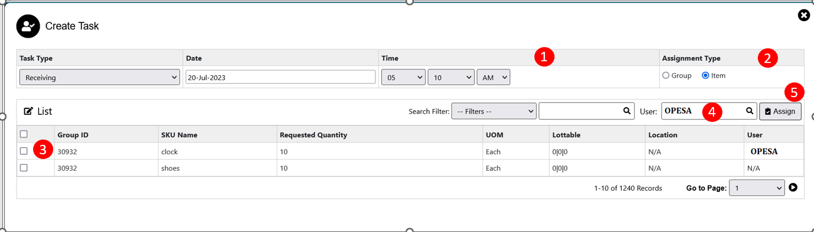

Task Assignment
Task Assignment- Group Wise
Task Assignment is used to assign work to another user.The Admin has the right to assign work to another users of same customer & warehouse. For Assigning task user need to click on task assignment menu then the task assignment menu will open.
The various parts of this dialog are:
1. Open task : In open task all assigned task will be displayed with details of order number,task code, assigned user name.
2. Completed task : In completed task all completed task will display with details of order number,task code, assigned user name.
3. Overdue task : If admin assigns the task to user but user unable to complete the task within given timeline then the order will be displayed in the overdue task.
4. Search Filter : User will able to search by task code,order number,task type,due date,user.
5. Reassign Button : If user want to reassign the task then click on reassignment button then user list will open & select the user from the list.
6. Create New : If user want to add or assign new task then need to click on create new button then create task page will open.
Create New
1. Task Type : Task type drop-down user can view all the task related inward & outward cycle count,replenishment.Admin need to select one task from drop-down. Consider Admin selected user type as receiving.Then all order with status of receiving will display in list create task.
2. Then Admin need to define the deadline for task completion.
3. Assignment Type : In assignment type admin need to specify order should process by group wise.
4. Admin need to select the order which the user want to assign to the user.
5.User : Then Admin need to assign user from the user list for that user need to click on the search button then user list will open. Admin need to select the user.
6. Assign : Using assign button admin will assign the task to user.
- Then the assigned order will display only for assigned user & only assigned user can process the order.
- For Processing the order the assigned user need to login & if assigned task is receiving then from inward menu user can able to access the order need to complete further process.
Note: Same process is applicable for all the task type.
Task Assignment- SKU Wise
1. Action Button : For SKU wise assignment admin need to select the order & click on the action button Then order wise SKU's will display on the create task list.
2.Search Filter : using filter admin able to search SKU & order number.

1. Then Admin need to define the deadline for task completion.
2. Assignment Type : In assignment type admin need to specify order should process by SKU wise.
3. Admin need to select the items which he want to assign to the user.
4.User : Then Admin need to assign user from the user list for that user need to click on the search button then user list will open. Admin need to select the user.
5. Assign : Using assign button admin will assign the task to user.
- Then the assigned SKU's will be displayed only for the assigned user & only assigned user can process the SKU from that order.
- For Processing the SKU wise order, the assigned user need to login & if assigned task is receiving then from inward menu user can able to access the SKU's wise order need to complete further process.
Note: Same process is applicable for all the task type.
Created with the Personal Edition of HelpNDoc: Make Your PDFs More Secure with Encryption and Password Protection